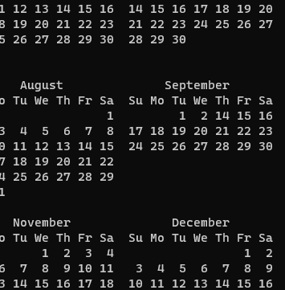

# Fechas faltantes por el ajuste de calendario

- Hay fechas que no existen en nuestro calendario. Fíjate en setiembre de 1752.
- Nuestro calendario tiene la particularidad de no encajar exactamente en el año solar.
- Para compensar esto en el Calendario Juliano, que se instauró en el gobierno de Julio César (el 1 de Enero del ahora numerado 46 AC), se estableció tener un día adicional cada 4 años, sin excepción.
- A pesar de eso, hacia 1582, durante el pontificado del papa Gregorio XIII, se tenía un notorio desfase de 10 días y se procedió a instaurar un nuevo calendario corregido, que luego se denominó Calendario Gregoriano.
- Una corrección consistía en establecer que el día adicional sería agregado en años llamados bisiestos
- aquellos que son múltiplos de 4
- pero exceptuando aquellos años que terminaran en doble cero (mútiplos de 100)
- Es decir, 1583 no es bisiesto, ni 1800, 1900
- e incluyendo aquellos años que aunque terminaran en doble cero fueran múltiplos de 400
- 1584 es bisiesto, y también 2000
- Y la otra correción consitía en eliminar los días de desfase, haciendo que luego del jueves 4 de Octubre de 1582 (que debía ser 14), el día siguiente fuera viernes 15 de octubre de 1582.
- Esto se efectuó en países como Italia, España y Francia, pero muchos países, como los anglos, no acataron el decreto papal.
- Una corrección consistía en establecer que el día adicional sería agregado en años llamados bisiestos
- Los países anglos, efectuaron el cambio recién en 1752, cuando el desfase del Calendario Juliano que seguían usando ya era de 11 días.
- La corrección consistió en eliminar los días de desfase, haciendo que luego del miércoles 2 de setiembre de 1752 (que debía ser 13), el día siguiente fuera el jueves 14 de setiembre de 1752.
- Es importante resaltar que los programas informáticos, como cal y ncal, muestran el calendario con el desfase corregido como se realizó en los países anglos.
- En esta página puedes revisar el calendario con los desfases corregidos en los demás países: